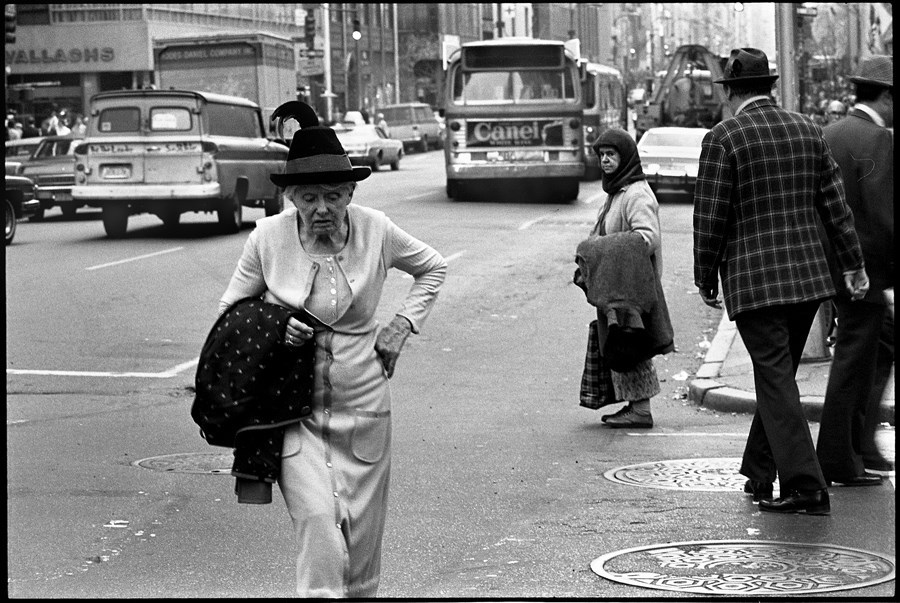
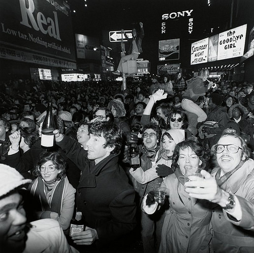
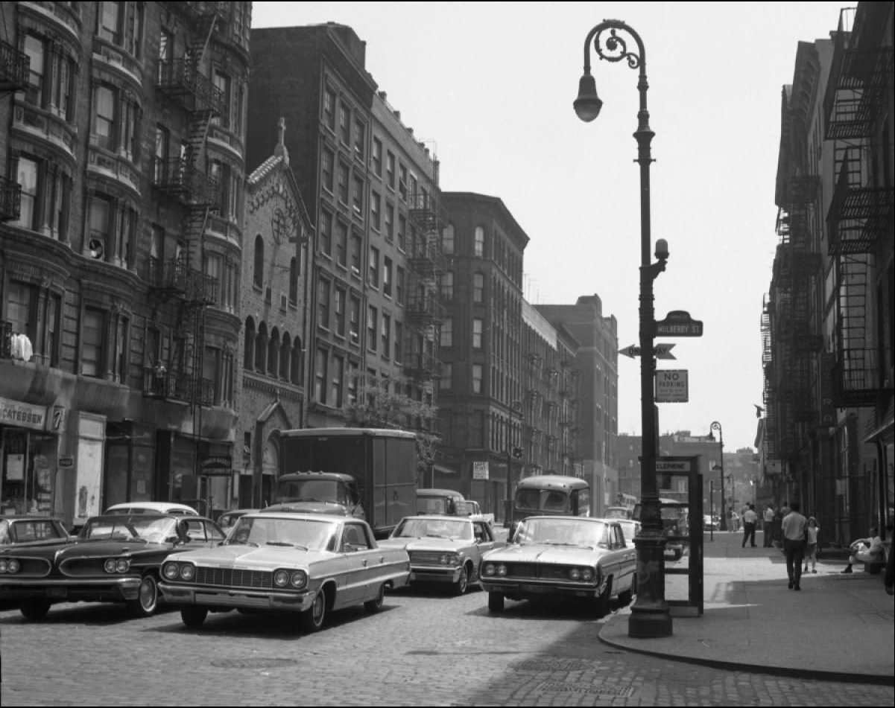
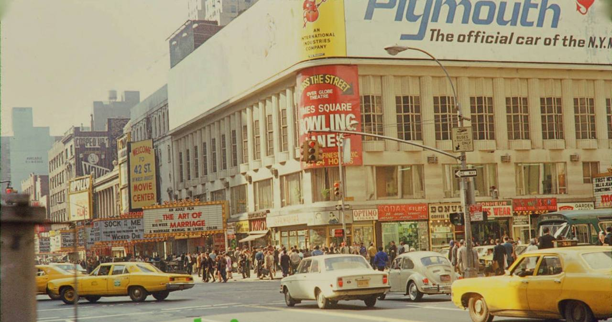
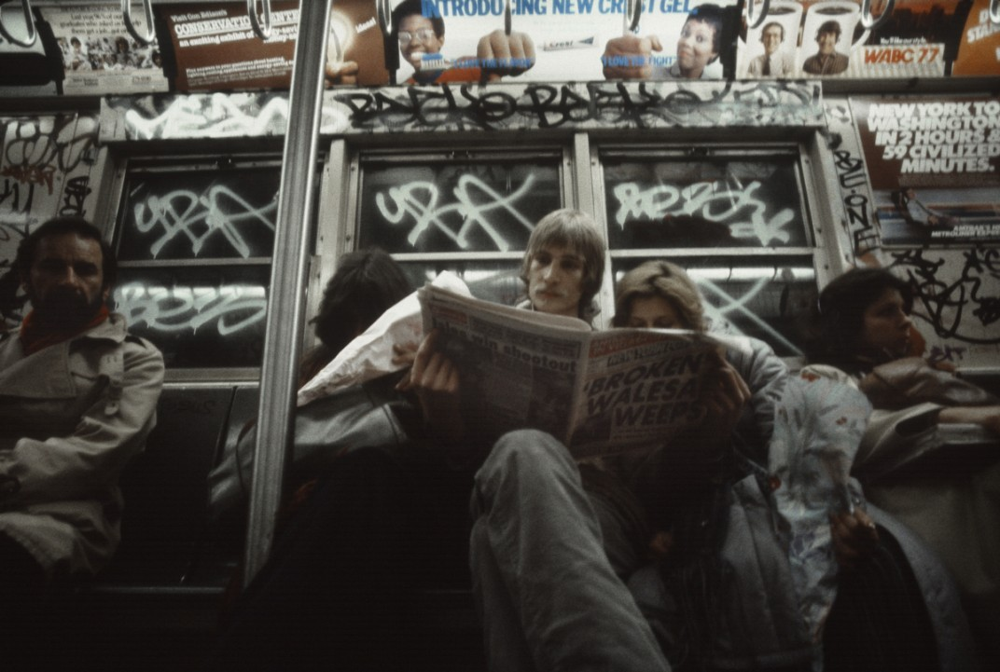
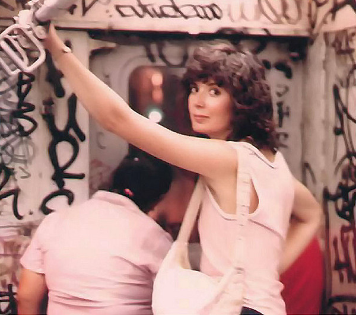

Ed Koch gives the “ok” for the Times Square ball, 1979-80.
Ed Koch gives the “ok” for the Times Square ball, 1979-80.

[insert ball joke here]
Holy crap! That’s wild! I just reblogged it from here: http://k-a-t-i-e-.tumblr.com/post/105969818340 You’d have to ask that person where they dug up the photo. Good luck!

Woolworth’s final days, 1984, 3rd Ave and 86th St.

Just another day in 1977

New Year’s Eve in Times Square, 1978 © Toby Old
Riding the BMT, 1978

3rd Ave and 14th St, 1980. The once-awesome Palladium standing grandly.
2 train, late 1970s

Pedestrians blatantly disregarding the “No Standing” sign

South Bronx, 1977
Alain Le Garsmeur

Broadway and West 47th Street, ca. 1974
Photo by Neil Libbert

NYC Housing Authority anti-crime poster, 1930s

New York City, Feb. 1973
Alain Le Garsmeur
Models photographed by Norman Parkinson on top of the Conde Nast building on Lexington Avenue, New York, 1949

“Leopard skin is SO last year.”
“Oh, yeah? Tiger skin makes you look fat.”
“I'ma cut you…”
“Bring it, bitch…”
Empire Strike.

Graffiti in 1973
Myrtle Avenue, Brooklyn, ca.1959
William Gedney Photographs and Writings
Duke University David M. Rubenstein Rare Book & Manuscript Library

Broome and Mulberry, 1960s

Women’s rights march, 1970
Paris. It was cool, but I felt like an idiot for not knowing any French.
I don’t travel much. I’ve been to Canada, Mexico, France, and a couple of island nations. And North Carolina.
I’m up in the frozen tundra of New England. Some day I’m moving to Jamaica. (Not really, but man it’s tempting, six months out of the year.)
Oh man, there was this place over by Tudor City… broccoli sauteed in garlic and olive oil, goddamn. I’m getting hungry.
Do you mean The Knicks? Or The Knack? Either way, sure.
Yes.
1970s. Dark, dangerous, and sketchy, but interesting as hell, and filled with art, diversity, and passion.
I don’t live in Manhattan anymore, but when I was there my favorite things were the bookstores (there used to be a ton of used bookstores, along with another ton of indie bookstores that were awesome), the pizza, and being able to walk anywhere I needed to go.
I’ve got an hour to kill. Best question wins my everlasting adoration:

Summertime, South Bronx, 1987
Edwin Pagán

“Paul Newman and Joanne Woodward,” Times Square,Town & Country, ca. 1960. Photograph by William Helburn (via The Wall Breakers)

42nd and 7th, 1970

Canopy Inn, 192 2nd Avenue at NE corner of East 12th St, Manhattan, circa 1952 (photo courtesy of Joe Preston)

Arson at the Chop Suey



1981 taggers didn’t believe in proper use of whitespace

Second Avenue at 14th St, 1976

‘sup
Thanks!
Thanks for the intel!
Ah, the South Bronx. I don’t know a lot of details – it was just constant mayhem up there. Poverty leads to crime which keeps people in poverty etc. Lots of anger, racial tension, despair.
That about sums it up perfectly!
Yup. I had forgotten about it until now though. Thanks!
Joe Pesci (who’s incredibly cool), Karen Allen, and the three-boobed chick from the original Total Recall.
It depends on what sorts of things you’re into. But in any case, unless you have a time machine I’m probably the wrong person to ask. When I go back to NYC these days, the only place I’m sure to visit is the Strand bookstore. Everything else in Manhattan seems like Disney and Starbucks had mutant babies.
Yeah, it was a scary but interesting place. I got mugged so much that I figured out how to talk muggers into taking only half of my money, so I’d have something for the next muggers. But I was never bored, and you didn’t have to be rich to have a decent life there.
Somebody ask me something.

Snow falls on 5th Ave, 1982

{kind=link}